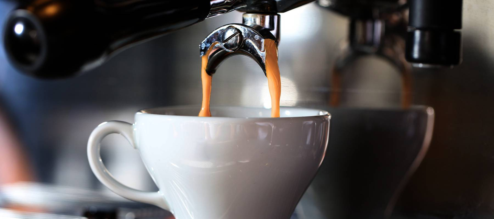

Técnicas de extracción de café
Fecha: 20 de Agosto de 2023
Precio: gratis
Cupo: 20
¡Atención amantes del café! ¿Quieres aprender las técnicas más modernas y eficientes para extraer el mejor sabor de tu café? ¡Tenemos el curso perfecto para ti! Nuestro curso de extracción de café te enseñará las últimas técnicas y herramientas para sacar el máximo sabor de cada grano de café. ¡Aprende de los mejores baristas y sorprende a tus amigos con tus habilidades de extracción! ¡Inscríbete hoy y conviértete en un experto en café!